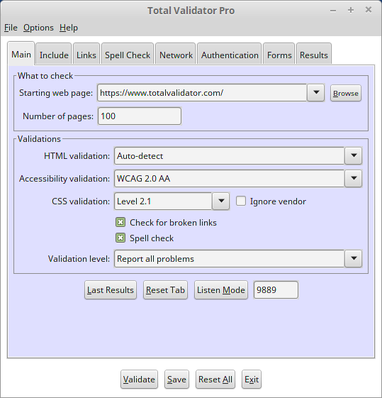

Introduction
All of the options that appear on the Main tab are described below. Note that some are only available with the Pro tool.

 top
topStarting web page
Total Validator will validate the page you specify using the validation options you've chosen. The starting page can either be a URL or a reference to a local file
If you have the Pro tool you can validate more than one page using the Pages option. Total Validator will begin at the starting web page and follow every link on the same website/filesystem, validating each page it finds.
If the starting page is a URL, then this must be a full URL including the http:// or https:// part. You cannot supply a relative URL such as ../forms.html.
If you are testing a local web page then you can either type in (or cut and paste) the path to the page, or use the Browse button to select the page you want to validate.
Use the Reset List menu option on the File menu to clear the dropdown list of recent entries.
Number of pages (Pro tool only)
If you specify a value greater than 1, Total Validator will follow any links on the starting web page, and keep on validating until it has checked the number of pages specified. But note that we ignore any links in javascript.
If you have selected a CSS validation then external stylesheets are included in the total count of pages validated.
The fewer pages you check the quicker the validation will take. You often don't need to check your entire website, especially if most of the website uses templates and is essentially the same on every page. So just checking a portion of it should give you everything you need to correct your site, or give you confidence that it is still okay after deploying any changes. See the FAQ entry for how to create a list of disconnected links to validate.
The value that you enter here must be an integer (whole number) greater than zero, or leave the value blank to validate all the pages linked from your starting page.
Total Validator works by checking every link in the order it finds them on each page. So it will check all the pages linked to the starting page before checking all the pages linked to the first page referenced by the starting page. Also because it is checking links even though you may not have selected the Check for broken links option, the Timeout and Concurrency options are still valid and will influence how quickly the validation is performed
HTML validation
Select the specification you wish to test against from the drop down, or select the blank option if you do not wish to perform a HTML validation.
The Auto-detect option is often the best option to select as this uses the <!DOCTYPE> declaration on each page to determine what specification to check against. If the <!DOCTYPE> is missing or unrecognised a best-fit algorithm will calculate the option that produces the fewest errors and will test against that instead.
The Best-fit option ignores any existing <!DOCTYPE> and uses the DTD that produces the fewest errors. This is a useful way of determining the best <!DOCTYPE> to attach to any page.
Note that Auto-detect and Best-fit will never choose a Polyglot validation. These must always be selected manually.
Accessibility validation
Select this option if you wish to validate each page against the W3C Web Accessibility Guidelines (1.0 or 2.0) or US Section 508. There are three WAI levels to choose from for WCAG 1.0 covering the Priority 1, 2 and 3 guidelines: A, AA, and AAA. And three levels for the WCAG 2.0 guidelines: A2, AA2 and AAA2
Note that many of the published accessibility guidelines can only properly be tested through manual checking of your pages. That is why most accessibility validators typically display lots of largely irrelevant warnings with every page that is tested. Total Validator keeps things nice and simple and just displays errors and warnings for those tests that can be automated. But you must still manually check that your pages are accessible, as passing any automated test isn't normally good enough. Tools such as Total Validator are best used to check your pages once you've made them accessible or following any minor changes to them.
Further information on our recommendations regarding accessibility testing may be found here.
CSS validation
Select the CSS Level you wish to test against from the drop down, or select the blank option if you do not wish to validate your CSS.
This option allows you to validate the contents of <style> tags, 'style' attributes and style sheets against the selected W3C standard.
If you do not select this validation then the contents of <style> tags will not appear on the results pages, external style sheets will not be read, and any embedded links within <style> tags, 'style' attributes and style sheets will not be validated, or followed.
Ignore vendor
Normally CSS vendor extensions such as -moz-box-shadow will raise a warning, but will still be validated against the chosen CSS level. But some vendor extensions do not conform to the latest specifications and may also report an error.
With the 'ignore vendor' option any vendor extension will be ignored completely so that no warnings or errors are reported.
Check for broken links
If you choose this option (selected by default) the tool will check each link to ensure that it isn't broken. But note that we ignore any links in javascript.
Links to all resources such as CSS files, images, and scripts are checked as well as links to other web pages. Note that checking links can often be a time consuming process, especially if there are broken links on your pages, and especially if you are checking more than one page, so please be patient. However, use of the timeout and concurrency options may help speed things up.
Links within <style> tags, 'style' attributes and style sheets are only tested if you select a CSS validation.
If you are testing a local file then you may find a number of broken links on the results page. This is because relative links will be followed as if they are local files on your computer. So if you don't have the file the link will appear broken. Similarly absolute URLs will be tested, and these may appear broken if you are working off-line or the URLs are inaccessible for any reason.
Spell check
Select this option if you wish to check the content of your page for spelling mistakes. It will use the language codes on your pages to detect the languages used and can check against an English dictionary of over 150,000 words, French of over 130,000 words, Spanish of over 85,000 words, German of over 160,000 words, and Italian of over 60,000 words.
You can also include additional words that are not found in the supplied dictionaries, or use your own alternative dictionary for these or other languages using options the Spell Check tab. See the dedicated Spell checking page for details on how best to use this option.
Note that when you use the Spell check option it may take substantially longer to check each web page.
Validation level
There are three types of problems which may be reported. The first are 'Errors', which are violations of one of the validations you have selected. The second are 'Probable Errors', which are typically errors in the majority of cases but can be ignored if they are done deliberately (these most often occur with Accessibility validations). The last are 'Warnings', which are possibly errors or just changes worthwhile considering as they may help to improve your pages.
This option allows to to select which type of problems will be reported. The default is to report everything, but you can also choose to ignore Warnings, or both Warnings and Probable Errors (the 'Only report errors' selection).
Note that you can also exclude individual problems by listing them in the Ignore errors/warnings option or by adding special instructions instead.
Last results button
This will open a window or tab in your default browser to display the results of the last successful validation.
Reset tab button (Pro tool only)
The Reset Tab button on each tab resets all the options on that particular tab to their defaults. If you wish to reset all of the options on all tabs then use the Reset All button at the bottom instead.
Note that a confirmation dialog will appear just in case you press this button by mistake
Listen mode
This option is for use with the browser extensions.
Set all the validation options you require (except for the starting page), then click the Listen Mode button. The tool will then shrink into your System Tray and start listening for incoming validation requests from your browser extensions. Click the System Tray button to stop listening for requests and resume normal use.
The tool listens on a port. You can enter the port number to listen on in the field next to the Listen Mode button. This is set to 9889 by default but can be any number in the range 1-65535. You must choose a number that does not conflict with any other service you use, and it must match what is set in the browser extension.
If you wish to start Total Validator and go straight into listen mode (such as when starting your computer), then use the listen mode version of Total Validator provided. This should be found where the normal Total Validator program/script resides for your particular operating system.
Bottom buttons
Once you have selected your web page and options use the Validate button to start the validation process. At the end of the process your default browser should be launched displaying the results of the validation.
During the validation process you can use the Cancel button to stop the process. Note that this may take a while to respond when validating broken links.
The Reset All button resets all of the options on all of the tabs to their defaults. If you wish to reset just the options on an individual tab then use the Reset Tab button on that tab. Note that a confirmation dialog will appear just in case you press the Reset button by mistake
There is also a Save button to save the current workspace, and an Exit button to exit the tool.